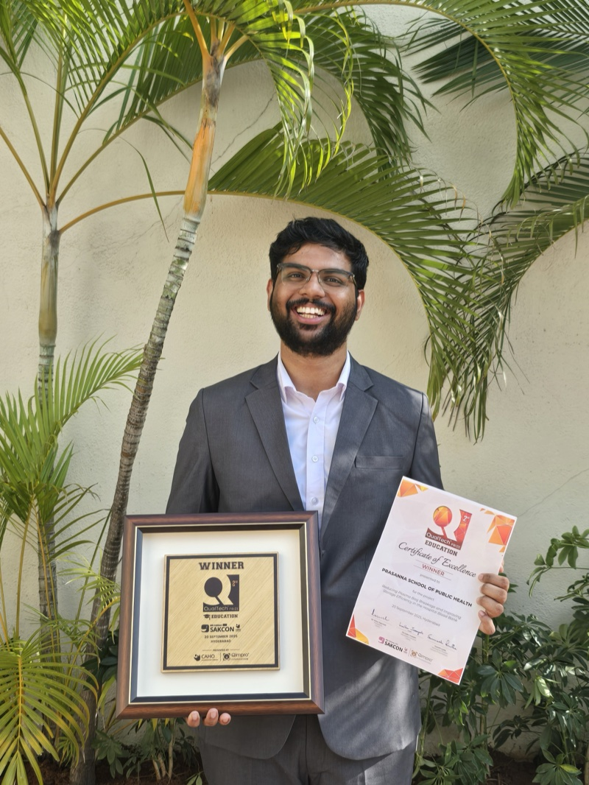

Who am I?
I've always wanted to answer this question in interviews when they ask me, "Tell me something about yourself." I've always wanted to say that I'm not sure where to begin. I am so much more than my resume. I am so much more than the degrees I have and the qualifications I've earned, the organizations and groups that I've been part of, and the certificates I may have collected. I did those things because I was told to. I did them because I was supposed to.
Who I am lies in the breaks I've taken between those things. Who I am lies in the free time I get. Who I am lies in the moments when I close the notebook and leave the classroom—when I'm alone. That's where the answer to who I am lies.
This website will fail to tell you who I am, because I don't think anybody can. I don't think it's possible to know a person completely unless you immerse yourself in them fully. This website will tell you what I answer to those questions in interviews: My name, where I'm from, and all the degrees I have. But that's not who I am.
If I were to tell you who I am in three words, I would probably say:
the wind, the trees, the skyThat's all there is. That's all there ever was.

Experience & Projects
Technical Team Lead
NextGen — Prasanna School of Public Health, MAHE
Architecting a RAG-based AI dashboard to centralize hospital operations data. Serving as the technical liaison between hospital administrators and MIT developers, translating complex HIS data into actionable schemas.
60% projected reduction in data retrieval timeProject Lead — Quality Improvement
Led a 6-member cross-functional team through a DMAIC cycle to resolve supply chain inefficiencies in blood bank operations. Designed a patent-pending packaging solution that won the national QualTech® Prize.
95% reduction in plasma bag breakage · ₹2.6L annual savingsStudent Secretary — SVASTH-25
Directed a Core Committee to execute a 2-day national conference for 215+ attendees. Managed end-to-end operations including vendor negotiations, budget allocation, and speaker liaison.
₹1.8L budget · 215+ attendeesCorporate Connect Coordinator
Dept. of Biosciences & IAESTE — Manipal University Jaipur
Established strategic partnerships between industry and academia. Negotiated 18 MoUs with startups for student internships and curated technical seminars for 200+ students.
18 MoUs · 200+ students impactedUndergraduate Researcher
Structural Biology & Bioinformatics Lab — MUJ
Developed a high-throughput computational screening pipeline evaluating 3000+ FDA-approved compounds against MRSA targets. Used R, Gromacs, and multi-stage statistical validation.
3000+ compounds → 2 therapeutic candidatesSide Projects
Outside of work and academia, I build things for the fun of it. Sometimes to solve my own problems. Sometimes just to see if I can.
Sensum
I built my own voice keyboard for Android because I was tired of the default options. Sensum uses Groq's Whisper API to transcribe speech near-instantly and inject it anywhere. It proved to me that shipping a polished native Android app in 2026 is completely within reach — no CS degree required.
VARC Practice
A comprehensive practice website featuring a mock interface that represents the CAT (Common Admission Test) exam. It is extensively similar to the actual CAT interface, helping students get used to the environment while practicing Reading Comprehension and Verbal Ability questions. It features high-quality data curated from RC99, GMAT 700, and CAT 700, along with a built-in timer, interactive analytics, and a fully featured dark mode—offering students their first-ever dark mode CAT practice experience.
# AI Agent → Mac
AI Agent
→ http://localhost:8000/mcp
→ Mac Orchestrator
→ macOS System APIs
# 18 lean MCP tools
mouse_action(x, y, action)
get_screen_text() # OCR
run_terminal_command(cmd)
execute_macro(actions)Mac Orchestrator
An MCP server that gives any AI agent direct control over your Mac — mouse, keyboard, screen via OCR, files, everything. I forked and optimized this heavily, cutting the toolset from 46 down to 18 lean, expressive tools. It's what powers most of my agentic workflows.
Asptor
A clean, ad-free reading site for CAT preparation. It pulls articles from The Hindu, The Caravan, and Fifty Two via a Python pipeline that runs on GitHub Actions every few hours, cleans them, deduplicates, and publishes a static site. Because reading well is a skill worth practicing properly.
Education
Master of Hospital Administration
Prasanna School of Public Health, MAHE
B.Sc. (Hons.) Biotechnology
Skills & Certifications
Operations & Management
- Lean Six Sigma
- Process Improvement
- Project Coordination
- DMAIC Methodology
Data & Technology
- Python
- R
- Power BI
- Advanced Excel
- RAG-based AI Systems
Research & Science
- Biostatistics
- Molecular Dynamics
- Data Simulation
- Research Methodology
Recognition
National Winner — QualTech® Prize Education
Qimpro Foundation · September 2025
Recognized for innovative process improvement solution achieving 95% reduction in plasma bag breakage and ₹2.6L annual cost savings at SAKCON, Hyderabad.
Best Student Award
Manipal University Jaipur · March 2023
Overall excellence in academics and co-curricular activities during B.Sc. (Hons.) Biotechnology.